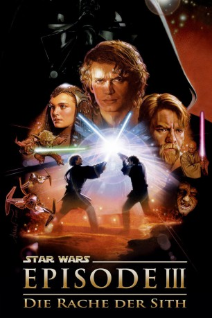

Auszeichnungen: für 1 Oscars nominiert
 gesehen am 15.11.2015
gesehen am 15.11.2015Alternativ: Star Wars: Episode III - Revenge of the Sith
Auszeichnungen: für 1 Oscars nominiert gesehen am 15.11.2015
 
 IMDB-Wertung: 7.6 / 10
IMDB-Wertung: 7.6 / 10  Metascore:
Metascore: 
Nach drei Jahren nähern sich die Klonkriege endlich dem Ende. Um die Separatisten endgültig zu besiegen, soll Obi-Wan Kenobi ihren Anführer General Grevious und Count Dooku ihrer gerechten Strafe zuführen. Zur Beunruhigung der schwangeren Padme nutzt daheim der endgültig vom Bösen korrumpierte Kanzler Palpatine die Gelegenheit, um den jungen Anakin Skywalker mit Versprechungen von unbegrenzter Macht auf die dunkle Seite zu ziehen. Ratlos und hin- und hergerissen wem er dienen soll, erliegt er geblendet von deren Machtverheißungen, den Versuchungen der dunklen Seite, schwört dem bösen Darth Sidious die Treue und nimmt die Identität von Darth Vader an. Die Sith-Lords beginnen zusammen einen Rachefeldzug, der in der Ermordung der Jedi seinen Anfang nimmt...
Jahr: 2005
Dauer: 140 Minuten
FSK: 12
Land: USA Studio: 20th Century FoxTonspuren:
Untertitel: Deutsch, Englisch,
Auflösung: 1080p (1920x1080) Größe: 34508 MB
Genre: Action, Abenteuer, Fantasy, Sci-Fi
Regisseur:  George Lucas
George Lucas
Drehbuch: George Lucas
Soundtrack: John Williams
Darsteller:
 Ewan McGregor als Obi-Wan Kenobi
Ewan McGregor als Obi-Wan Kenobi Natalie Portman als Padmé
Natalie Portman als Padmé Hayden Christensen als Anakin Skywalker
Hayden Christensen als Anakin Skywalker Ian McDiarmid als Supreme Chancellor Palpatine
Ian McDiarmid als Supreme Chancellor Palpatine Samuel L. Jackson als Mace Windu
Samuel L. Jackson als Mace Windu Jimmy Smits als Senator Bail Organa
Jimmy Smits als Senator Bail Organa Frank Oz als Yoda
Frank Oz als Yoda Anthony Daniels als C-3PO
Anthony Daniels als C-3PO Christopher Lee als Count Dooku
Christopher Lee als Count Dooku Keisha Castle-Hughes als Queen of Naboo
Keisha Castle-Hughes als Queen of Naboo Silas Carson als Ki-Adi-Mundi / Nute Gunray
Silas Carson als Ki-Adi-Mundi / Nute Gunray Jay Laga'aia als Captain Typho
Jay Laga'aia als Captain Typho Bruce Spence als Tion Medon
Bruce Spence als Tion Medon Temuera Morrison als Commander Cody
Temuera Morrison als Commander Cody Oliver Ford Davies als Sio Bibble
Oliver Ford Davies als Sio Bibble Ahmed Best als Jar Jar Binks
Ahmed Best als Jar Jar Binks Jeremy Bulloch als Captain Colton
Jeremy Bulloch als Captain Colton Kenny Baker als R2-D2
Kenny Baker als R2-D2 Peter Mayhew als Chewbacca
Peter Mayhew als Chewbacca Joel Edgerton als Owen Lars
Joel Edgerton als Owen Lars Genevieve O'Reilly als Mon Mothma
Genevieve O'Reilly als Mon Mothma Kee Chan als Malé-Dee
Kee Chan als Malé-Dee Rena Owen als Nee Alavar
Rena Owen als Nee Alavar Christopher Kirby als Giddean Danu
Christopher Kirby als Giddean Danu Matthew Wood als General Grievous
Matthew Wood als General Grievous James Earl Jones als Darth Vader , uncredited
James Earl Jones als Darth Vader , uncredited Goran D. Kleut als Lampay Fay , uncredited
Goran D. Kleut als Lampay Fay , uncredited Bai Ling als Senator Bana Breemu , uncredited
Bai Ling als Senator Bana Breemu , uncredited George Lucas als Baron Papanoida , uncredited
George Lucas als Baron Papanoida , uncredited Suzie Steen als Hand Maiden 3 , uncredited
Suzie Steen als Hand Maiden 3 , uncreditedDatei: X:\7+mehr(A-Z)\Star Wars\Star Wars Episode 3 - Die Rache der Sith (2005, FSK12, 1920x1080).mkv seit 21.02.2015
Festplatte: HD Collection-7+mehr(A-Z)+Person
 Es gibt insgesamt 18 Filme in der Gruppe '7+mehr(A-Z)\Star Wars'
Es gibt insgesamt 18 Filme in der Gruppe '7+mehr(A-Z)\Star Wars'